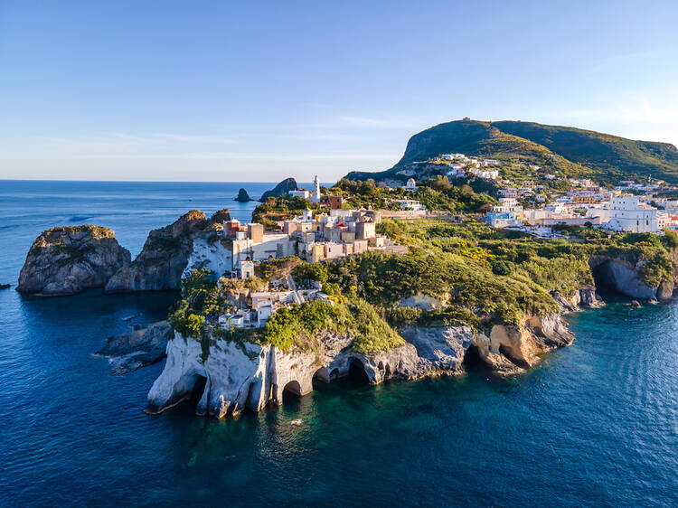

TURISMO Y CULTURA
En 1980 fue nombrado Patrimonio de la Humanidad por la UNESCO y desde el 2007, se convirtió en una de las Siete Maravillas del Mundo. Antigüamente se llamaba Anfiteatro Flavio, pero en la actualidad y en todo el mundo, es conocido como el Coliseo.
Su construcción fue iniciada por Vespasiano (Dinastía Flavia) en el 72 d.C, con los fondos obtenidos de la victoria a Jerusalén en el año 70, pero fue inaugurado en el año 80 d.C por Tito, su hijo y sucesor. Esta obra maestra arquitectónica, se convirtió en el símbolo de Roma Imperial y es el monumento romano más importante que ha sobrevivido hasta nuestros días.
El Coliseo, albergó a muchos espectadores ávidos de diversión. Se utilizó para los espectáculos con gladiadores (siempre apreciados por los romanos desde la época de Octavio, un defensor de la política de "pane et circenses") además, fue sede de diferentes eventos públicos tales como la caza, la recreación de batallas famosas...

LISTA DE LUGARES
Cerdeña
Equidistante de la costa italiana y del extremo norte de África, Cerdeña (la segunda isla más grande del Mediterráneo, después de Sicilia) es un lugar de tradición y belleza sin pretensiones, donde la vida se vive con sencillez (y, en relación con esto, donde la gente vive más tiempo). Un número aparentemente infinito de hermosas playas bordean la costa, desde las arenas marfileñas de Cala Gonone en el este hasta las aguas cristalinas de Tuerredda en el sur. Aventúrese hacia el interior en busca de pueblos pequeños y tradicionales y paisajes montañosos escarpados, y no se vaya sin probar un cremoso pecorino, un cochinillo o un estofado de langosta.
Capri
Gracias a su deslumbrante belleza, Capri fue el lugar favorito de artistas e intelectuales de los siglos XIX y XX. Hoy en día es justo decir que la isla se ha convertido en un lugar de recreo de verano para los adinerados. Debajo de los imponentes acantilados de piedra caliza de Capri, los yates salpican sus aguas color aguamarina, los visitantes beben limoncello de producción local y gente hermosa y bronceada toma el sol en clubes de playa encaramados sobre rocas. Un consejo: Capri es un poco pequeña y por eso se siente muy concurrida en los meses de verano. Considere visitarlo fuera de temporada. En primavera, fragantes flores silvestres cubren la isla, mientras que se sabe que las temperaturas del mar en septiembre transmiten el calor residual del verano.
Elba
Cuando piensas en la Toscana, puedes pensar en colinas onduladas, arte renacentista y pueblos rústicos en las cimas de las colinas, y no, tal vez, en una cadena de islas que albergan playas de estilo tropical realmente impresionantes. Bueno, Italia está repleta de sorpresas. Elba, la isla más grande del archipiélago toscano, alberga extensiones de arena fina que rivalizan con cualquier playa del Caribe. También es famoso el lugar donde Napoleón fue exiliado y del que escapó. Pero no todo es sol, mar, arena e historia política: las ciudades tranquilas y animadas y los paisajes montañosos que caracterizan a la Toscana continental se extienden hasta las islas de la región. ¿Te apetece una caminata? El Monte Cappane de Elba ofrece varios senderos, con vida silvestre y vistas impresionantes de todo el archipiélago (y más allá).
Ponza
Sicilia